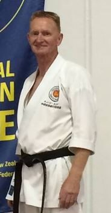
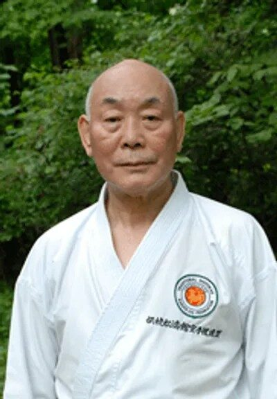
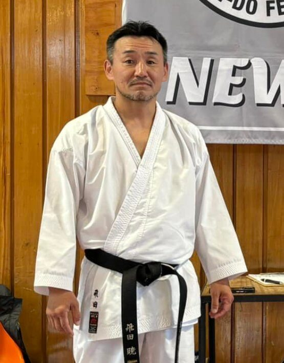

Our Sensei
Our dojo is led by experienced black belts with decades of Shotokan Karate practice.

6th Dan Black Belt
Sensei Grant Stove
Head Instructor — Wellington Dojo
Sensei Grant Stove leads the TSKF Wellington Dojo with over 25 years of Shotokan Karate experience. He was a founding member of the Wellington Dojo in 1992 and holds a 6th Dan black belt. He is assisted by senior black belts during training of junior students.

8th Dan Black Belt
Shihan Mark Willis
TSKF / ISKF NZ Deputy Chief Instructor
Mark Willis Shihan is the Deputy Chief Instructor of TSKF/ISKF New Zealand, holding an 8th Dan black belt. He runs our annual Gasshuku event and conducts regular seminars and gradings around the country.

9th Dan Black Belt
Prof. Shunsuke Takahashi
TSKF NZ Chief Instructor (Takahashi Shihan)
Professor Shunsuke Takahashi (Takahashi Shihan) has been training New Zealanders in Shotokan Karate since 1978. Based in Tokyo, Japan, he holds a 9th Dan black belt and returns to New Zealand regularly to conduct training seminars and gradings around the country.

7th Dan Black Belt
Satoru Tobita
Visiting Instructor (Tobita Shihan) — TSKF Japan
Satoru Tobita (Tobita Shihan) is a 7th Dan black belt based in Mito City, Japan. He visits New Zealand as our visiting instructor, conducting gradings and seminars for TSKF Wellington members.
Interested in Training?
Get in Touch